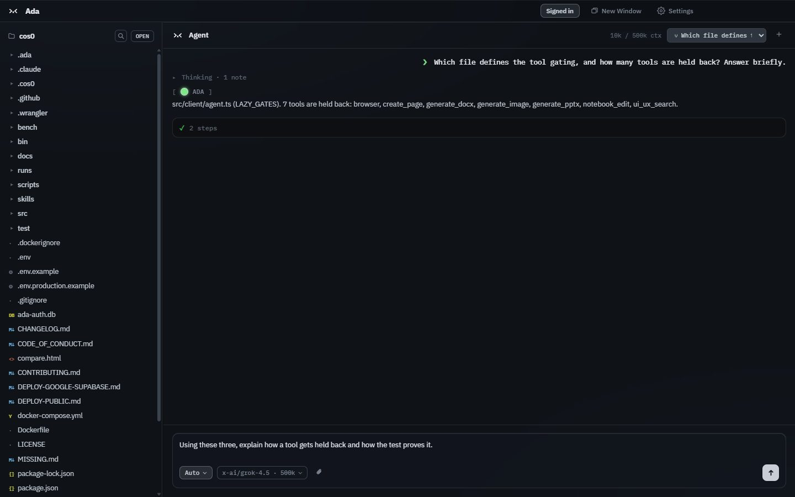
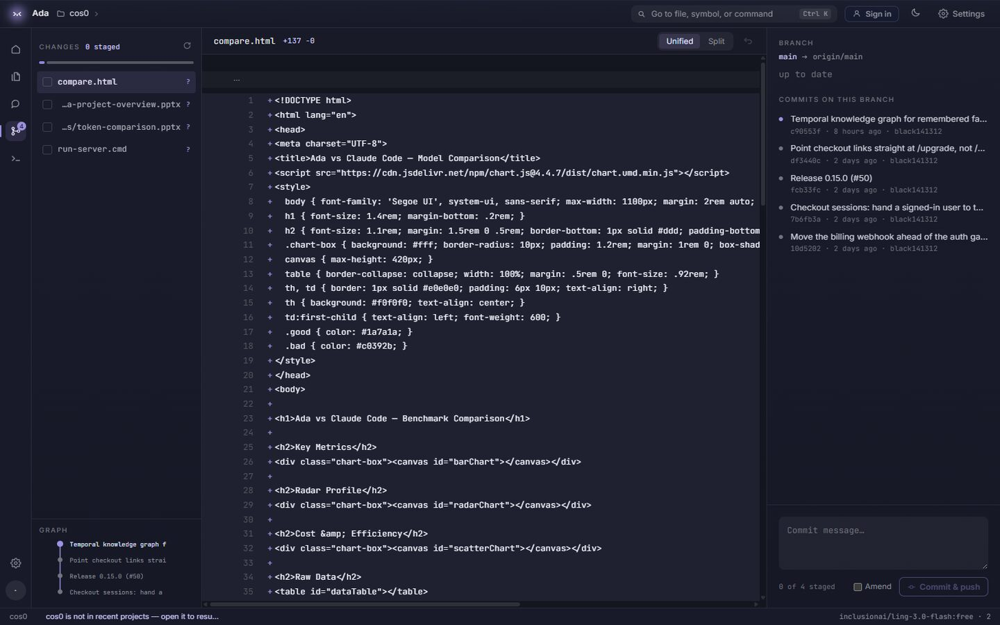
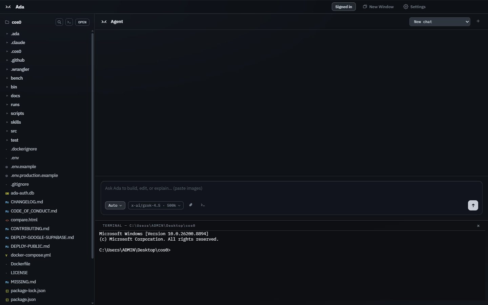
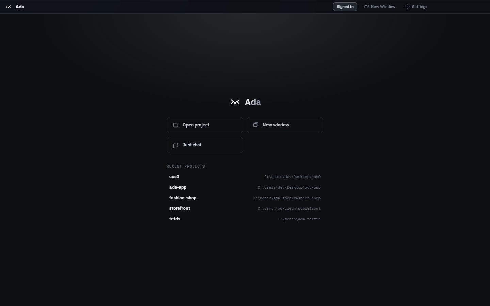

The expensive part of AI coding isn't the model.
It's how much you send it.
Ada is a desktop editor built around a coding agent that maps your repository once, sends
only what a turn actually needs, and routes to any of 340+ models. Every change lands in
its own git worktree until you merge it.
Both agents were asked to summarise the same project, on the same machine, from matched
git checkouts. This is what each one put on the wire.
Claude Code0 tokens in · $0.5291
standing prompt ≈77k — sent before it reads a single file
Ada0 tokens in · $0.2046
repo map + the context it chose
standing prompt
tool schemas, 3,848
repo map — built locally, free
tool schemas, 1,772
the question itself
3× less sent. Ada's entire request is smaller than the part of the other
request that exists before any work has happened.
> < 02 / how
Four decisions, each one measurable.
Nothing stands by default
No permanent system prompt riding along on every turn. Ada assembles each request from
scratch, so a short question costs what a short question should —
“hi” is about 272 tokens, tools and repo map included, because
neither is sent.
Tool schemas are earned
Every tool you expose is re-sent on every request. An ordinary coding turn carries
1,772 tokens of schemas instead of 3,848 — decks, documents, images,
notebooks, the browser and the design corpus stay out until the conversation asks,
each behind its own trigger.
The map is built on your machine
Opening a project builds a compact map of files and symbols, and the semantic index
runs a local embedding model — no embedding API bill, ever, and your code
never leaves the machine to be indexed.
A tool beats a description
Asked for a presentation, Ada calls its deck writer and hands back a real
.pptx: $0.28 against $1.25 for an agent hand-writing slide markup.
Same for lookups — the map answers without opening files.
> < 03 / the editor
An editor you already know how to use.
File tree, Monaco, fuzzy open, find-in-files, an integrated terminal. No learning curve.
What's different is the pane on the right.

A real run — the agent reads its own source and explains how tool gating works, in
five steps on 10k of a 262k window. Tool calls, step count and context usage are
on screen, not hidden.

Review the diff, stage what you want, commit — without leaving the window.
Ctrl+P for files, Ctrl+Shift+F for text across the project.

A terminal inside the editor, already in your project folder.

Open a folder — or just chat, no folder required.
340+
models across 12 providers, switched mid‑conversation
API keys needed to start — free models work signed out
> < 04 / the benchmark
Five tasks, one repository, published in full.
Ada against Claude Code — same machine, same model (Opus 4.7), same prompts,
matched git worktrees at the same commit. Every run, including the one Ada lost.
Task
Ada in
Ada cost
Other in
Other cost
Summarise the project
31,856
$0.2046
95,941
$0.5291
Create a pricing API
206,954
$1.2340
424,706
$1.5339
Tetris game
109,041
$0.7634
95,708
$0.6885
Portfolio website
57,075
$0.5674
128,389
$0.6738
Project presentation
38,726
$0.2807
148,150
$1.2517
Total
443,652
$3.0501
892,894
$4.6770
Read the Tetris row closely. It's the one task that cost more — by
seven cents — and it shipped 6.7× the code: 630 lines against
94, with a next-piece preview, levels, a ghost piece, pause and wall-kick rotation the
cheaper build doesn't have. Per hundred lines delivered that's $0.12 against
$0.73. Tasks anchored in existing code ran 16–78% cheaper, and the gap
widens as a codebase grows.
Ada talks to any OpenAI-compatible endpoint. OmniRoute is one you run on your own machine:
it holds your provider accounts, and Ada treats it like any other backend. Settings →
Connections installs it and connects, in one click.
One button, not a setup guide
Ada installs it into a folder it owns, starts it, and points itself at it — no
sudo, no npm prefix to reconfigure. If Node is too old or the port is
taken, the card says which, and what to run.
Your keys stay yours
Providers are connected in OmniRoute's own dashboard, on localhost. Ada
never sees those keys, and nothing you send through the gateway is metered or billed
here.
Reversible in one click
Disconnect points Ada back at its own backend, and the gateway keeps running —
it is yours, not Ada's. Removing it is deleting one folder.
OmniRoute is a separate open-source project, and you bring your own accounts to it. It
needs Node 22.22.2 or newer — Ada checks before installing rather than after.
OmniRoute on GitHub.
> < 06 / download
Free while it's in beta.
Install and chat immediately with the free models — no account. Sign in with GitHub
to unlock the full catalogue.
macOS builds are signed and notarized by Apple. On Windows, if SmartScreen appears, choose
More info → Run anyway. Ada updates itself from then on.
All versions.